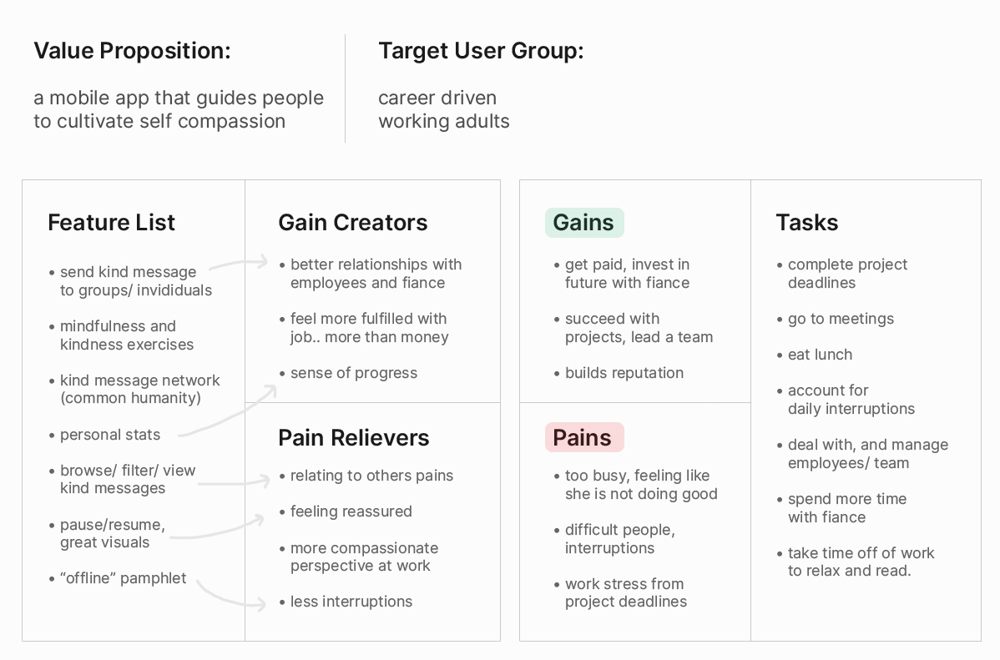
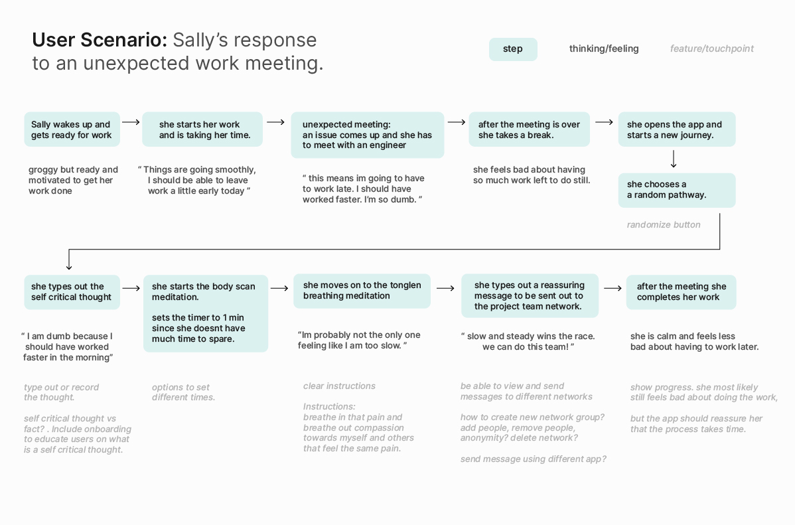

Problem There are many people who face self judgemental or self critical thoughts on a daily basis. These thoughts often become normalized in our lives and contribute to feelings of depression and isolation. Design Outcome Cometta(Co meaning together, Metta meaning loving kindness) is an app that will help you be mindful and respond kindly to your self critical thinking through a series of exercises. You can share this kindness by sending and receiving kind messages all over the world.
Overview Cometta efficiently and effectively guides the user through the challenging and impactful journey of cultivating self-compassion. Microinteraction, gesture, and UI animation provide meaning and enhance usability.
Send Kind Messages
You are not alone. Just as you feel and experience self criticism,
judgement, and suffering, other people across the world feel and experience
the same as well. Cometta brings recognition of this fact to the forefront of
the experience through the act of sending kind messages.
Releasing a kind message out to the world for others to receive helps you
cultivate a perspective of common humanity, which is a key element of self compassion.
Receive Kind Messages
Just as you send kindness out with a gesture swiping upwards, swipe
downwards towards yourself to receive a kind message.
View, filter, save, and share kind messages sent from around the
world to experience a sense of common humanity. A single kind message
can help shift your perspective and look at your feelings of suffering
from a kind and connected lens.
Mindfulness and Kindness
Through mindfulness exercises, the user learns how to be more clear about
their own thoughts, experiences, and behaviors. Once this level of mindfulness
is achieved, the user then has ability to reframe the existing patterns of
their mind through kindness exercises.
Microinteractions have been designed to make this introspective and
challenging journey more understandable, usable, and efficient for
multiple contexts and users.
Process
Cometta was my graduation project at Emily Carr University of Art and
Design. As the sole designer for this project I was responsible for a
wide range of the design process from product concept ideation to, user research
and UI/visual design.
The project began as an exploration into the question:
How might we design something that focuses on a transformative aspect
of mindfulness?
Concept Ideation Rapid sketching and prototyping allowed me to quickly explore many ideas. Video prototyping was a useful tool I used to get feedback on whether my ideas made sense and resonated with people. Through the video, the user could immediately see what is clear and not clear to them without a verbal explanation. During this ideation process, I arrived at many concepts around the topic of self- compassion.
Research
From secondary research I learned that people who have self- critical thoughts have been shown
to have an increased risk of depression, and other mental illnesses. Forms
of self- criticism include dwelling on mistakes, a sense of inadequacy, and
feelings of self- hate and disgust.
Some examples of self- critical thoughts are:
"I'm too unlikable to lead the engineering team"
"I'm not a good enough father for my kids"
"Bob is so much more social than me"
Volunteering and charity work was an immediate association for the term compassion.
So, as a form of field study research,
I went volunteering to help make and distribute sandwiches for the homeless in Vancouver.
Conversations with volunteers were very insightful. One volunteer mentioned how
she was unhappy with her career and the sort of rat race associated with it.
Seeing other people do things selflessly and without getting paid was what
inspired her to volunteer more herself and give her time to people in need. Inspiration
is a word that I feel captured the experience of volunteering well.
“I become so inspired … they are not getting paid to do it ...give my time to people in need”

volunteering: paper bag decorations
At another volunteering event, where volunteers decorated paper lunch bags with
encouraging words for people in need, I used the phrases spoken during loving
kindness(metta) meditation which I was introduced to at a guided mindfulness meditation class.
My conversations with volunteers and my experiences volunteering,
led me to think about a target user of working adults. Based on my observational insights
and preliminary personas, empathy maps, and user journeys,
a more refined problem statement was discovered:
Work life can be very unfulfilling and the competitive and fast paced nature of
modern jobs can lead to self- critical and judgmental thoughts. Design a simple and
cohesive experience that can be used by working adults to notice, examine, and
reframe self- critical thoughts (cultivate self- compassion).
Throughout the process of sketching and refining ideas, I looked at existing
products in the market space for reference and competitive analysis.
What I found was that the topic of self- compassion is not a focus of these apps.
The goal of my design was to bring the conversation of self- compassion to the
forefront of the mindfulness space.
The 3 elements of self- compassion in the high level user flow
Prototyping
Based on my research I had created a user flow. The goal of my first (formal)
prototype was to physically map out this flow and test it out. Simple
pdf instructions guided the user through a 1 minute audio mindfulness
meditation, and a self kindness exercise. For the last step, users wrote out
a kind message for the other participants on a poster titled the kind message network.
prototype v1 kind message poster
Prototype v1 Insights :
⭐ messages like “you are loved” resonated with users during testing.
⭐ doing this process in the midst of work, even if it's fast, is still an interruption.
⭐ have the option to write down the thought as thoughts can be easy to forget and messy in your head
⭐ the process feels a bit boring; its simply following instructions.
Prototype v2 test using Figma Mirror:
I conducted multiple low fidelity prototype tests like this with multilple
people to see how the user navigates through the app and observe any
usability, layout, or content issues in the prototype.
The design decisions I made were informed by prototype testing feedback and insights like these.
In this way, I went through many digital iterations of design. Layout, flow, navigation, animation
and more were continuously improved upon in each prototype iteration. Some of the key design
decisions I made came from prototype testing insights.
Key Prototype Testing Insights:
⭐ Touch screen gestures and animation really resonate with the users as they go through
the journey. These can communicate meaning and grab the user's attention.
⭐ Giving the user freedom to control is necessary as the context in which the user
is using the app can have time, and sensory limitations.
⭐ The way in which the user learns about the exercises and terms is very important
and should be clear and simple. Iterations where
narrative or metaphorical elements were used, were unsuccessful and confusing for
the users.
⭐ Progressively guiding through the experience with microinteractions can help
first time users of the app learn the layout and navigation without getting lost or overwhelmed.
User Research Revisit
In addition to prototype testing, user research informed the design in a big way.
Referring back and refining my user research was an ongoing process. What was lacking in my
secondary, field study and competitive research, was more specific, non- assumption, and user centred
research that could inform the value proposition and design of the product.
To solve this, I had done user interviews where I asked 3 adults about their average
working day and specific pain-points in their work life.
Key User Interview Insights:
⭐ People are really motivated to succeed and success in their job brings them happiness. This can be
a double edged sword. If they find it hard to successfuly do their job, their happiness suffers. Self- compassion
can help them develop a mental resilience to their work obstacles.
⭐ Many of them have pretty busy and full schedules. This means that they dont have much time
to relax or work on their hobbies.
⭐ Common pains include dealing with difficult people, having tight deadlines, and
unexpected interruptions in their schedules.
⭐ Something they already do during their breaks is communicate with loved ones.
A feature that taps into this existing flow can be a gain creator for the user.
With this step complete, I was able to refine and digitize my existing persona to reflect my new insights, and create a more focused value propostion, and user scenario.
user persona
value proposition design
user scenario
Visual Identity Development
Driving the visual design is this idea of the overview effect.
Just as astronauts gain a new perspective and feeling of oneness, or common
humanity with the world, the visual design of cometta seeks to emulate that
feeling through its visual and motion design elements.
I began my exploration into a visual identity with a collage. I continued work
on visual identity and design in Apple's Keynote and Adobe Illustrator in order to easily animate
and play around with colors, shapes, and layouts of UI elements. This was a
divergent and exploratory process.
collage visual exploration
Iterations of the visual identity developed alongside and was informed by the
iterations of user testing and feedback. Through the various visuals below,
you can get an idea of how the app evolved beyond the look and feel of the initial collage.
application of visual style of collage to prototype with UI animation annotations
Evolving the look and feel:
After receiving negative feedback on the visual style of the previous prototype,
I experimented in Keynote with color, animation, and imagery in order to rework and
create a visual identity that better communicates the app concepts. Keynote transitions
allowed me to iterate on animation and interaction as well.
The final look and feel of the app distills the many explorations into a cohesive and minimalist visual identity and UI. The final app visuals seen at the beginning of the case study were animated in Adobe After Effects for more clarity and control over the animations.
microinteractions and animations in the final prototype
swiping up gesture signifies sending a kind message
swiping down gesture signifies receiving a kind message
Check out the final interactive prototype
here
Final Thoughts + Next Steps
The final design outcome was determined heavily through user research and the iterative
process of prototyping, testing, and refinement. Ultimately the core experience of
cultivating self- compassion is designed through the micro- interactions, gestures, and animation.
A continuous challenge in the process was maintaining a balance between depth and simplicity of the
experience in order to bring in more engagement and interest from users. Placing focus
on kind message sharing, differentiates Cometta from existing mindfulness
apps that might touch upon self- compassion as a part rather than the whole of their offering.
A meaningful next step would be to conduct a thorough test of how effective
the app is at giving users the ability to shift their self- critical thoughts
towards more self- compassionate ones. This would require a serious time
commitment from testers as well as an ethical, and formal testing process.
As the sole designer on this project, my expertise does not go far beyond
design. So, bringing in people from many different fields to contribute
their expertise to this product, will be a valuable step in making this
product more inclusive and valuable for users.
Next Project